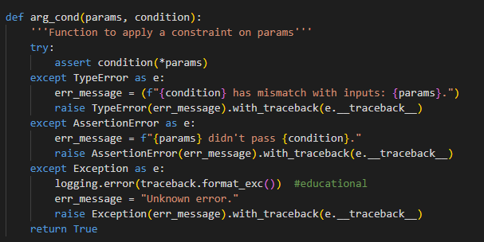
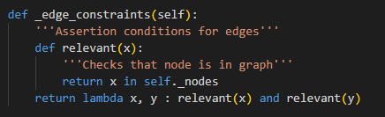
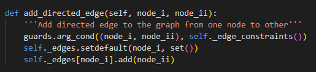

Quality Assurance
This is a collection of material connected to quality assurance, and good practises in general.
Software Quality Application Software
Glossary
- Debuggers - Software that allows breakpointing, or pausing during code execution. Debuggers help with getting information such as variable states, or the function call stack when needed. These could be right before an error occurs for example.
- Linters - Software that inspects the syntax and static semantics of a programme, before it's execution.
- Loggers - Software that allows the recording of details during code execution. This is usually done by writing comments to a file, dependent on in-code prompts.
- Testing Suites - Software that asserts conditions on a programme during execution and monitors compliance to those conditions.
Useful Links
Python Libraries
- ast - The ast library is a builtin library for converting python code into an abstract syntax tree. The ast can be passed to a linter programme to check for custom violations.
- logging - The logging library is a builtin library that provides a suite of tools for creating a logging system.
- PySnooper - PySnooper is library for logging practically everything during a programme's execution.
- unittest - The unittest library is a builtin library that provides a way to write a testing suite.
DevOp's tools
- Jira Issue Tracker - Jira was developed by Atlassian so it has compatibility-driven elements to work with other Atlassian products.
- SonarQube Code Inspector - Sonarqube is a continuous inspection tool that can be used to check code quality. It features Bitbucket and Jenkins integration; used by the company I work for.
Python Utilities
Guard Functions
During my implementation of an autonomous car system, part of this modules' coursework, I made use of a helper function for explicitly asserting guard conditions on function paramaters. This was done to make the code more readable.

If a guard condition is not met, the function raises an AssertionError. If the shape of the params doesn't
match the guard condition, then the function raises a TypeError.
The guard conditions were defined in the relevant classes themselves, mainly for accessiblity reasons. They consisted of nested functions for readability, and took the form of lambda functions.
The constraints could then be added to any method as needed.
Research Papers
Archive of papers related to software quality, and responsibility
- Guo, P. (2021) 'Ten Million Users and Ten Years Later: Python Tutor's Design Guidelines for Building Scalable and Sustainable Research Software in Academia'. UIST '21: The 34th Annual ACM Symposium on User Interface Software and Technology. USA, 2021. New York: Association for Computing Machinery. 1235-1251. DOI. - Guo describes 10 standards that he believe contributed to the popularity of Python Tutor, an academic tool for visualing code execution. Some of the things he discusses include content hosting, open-source development, user attitudes and some differences between commerical and academic software. The software can be found here..
- Pezze, M & Young, M. (2008) Software Testing and Analysis: Process, Principles and Techniques. 1st ed. New Jersey: John Wiley & Sons Inc. ISBN 9780471455936 - Pezze and Young provide a textbook which outlines principles, techniques, problems and processes of testing and analysis.
- Zhou, Z & Sun L. (2019) Metamorphic testing of driverless cars. Communication of the ACM. 62(3): 61-67. DOI. - Zhou and Sun propose a method of testing unsupervised software, through the identification of invariance that should exist in the results of test case transformations, and then testing that the software conforms to that invariance, using generated data.
- Zhu, H., Lin, C. & Liu, Y. (2015) 'A Programming Model for Sustainable Software'. 2015 IEEE/ACM 37th IEEE Intenrational COnference on Software Engineering. Florence, Italy, 2015. New York: IEEE. 767-777. DOI. - Zhu et al. introduce a new Java-based language called ECO with features for managing energy consumption and thermal requirements. The language makes use of a supply and demand model, and allows for the specification of code dependent on energy and thermal conditions. The language is hosted here. Suprisingly, the repo has only been starred 3 times, but the effort is noteworthy nonetheless.
Organisational Standards
- ISO/IEC/IEEE 29119 - Standards for aspects of software testing.
End of Module Reflection
During this course I have gained a deeper understanding of some of the theory behind software quality tools, such as Abstract Syntax Tree model of languages, and measures of complexity.
I've actively been trying to utilise ideas that I've picked up to try and improve my workplace. I've begun to build a script for converting a typescript framework into Class diagrams, by interacting with the AST of the framework files. The motivation behind this is purely educational, to improve the documentation of the complex framework we use at work for newcomers.
I believe the biggest takeaway for me though from this section of the course, is learning about object mixins. They allow for the seperation of quality concerns from core functionality in a OOP system, which can otherwise make core functionality less readable. According to the creator of python, we spend most our time reading code, so this should increase my productivity in a notable way.